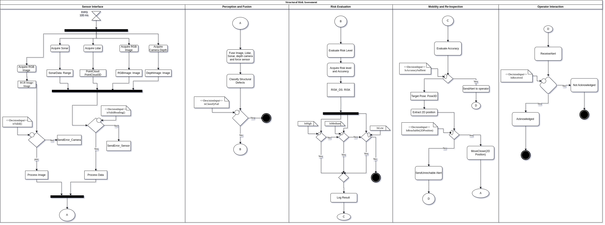
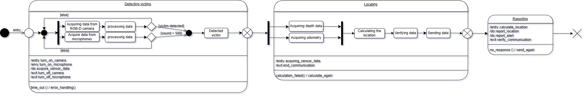

Components
SLAM
This node handles sensor data integration and maintains a 3D map of the environment while tracking the robot’s pose.
- class scripts.slam.SlamNode[source]
Bases:
objectMain SLAM node class that handles sensor subscriptions and map/pose publishing.
- latest_pose
Stores the most recent robot pose estimate
- Type:
PoseStamped
- map_pub
Publisher for 3D map data
- Type:
rospy.Publisher
- pose_pub
Publisher for current robot pose
- Type:
rospy.Publisher
- depth_callback(msg)[source]
Depth image callback function that processes 3D depth information.
- Parameters:
msg (sensor_msgs.msg.Image) – Incoming Image message from depth camera
- lidar_callback(msg)[source]
LiDAR callback function that processes 2D laser scan data.
- Parameters:
msg (sensor_msgs.msg.LaserScan) – Incoming LaserScan message
- odom_callback(msg)[source]
Odometry callback function that updates the robot’s pose estimation.
- Parameters:
msg (nav_msgs.msg.Odometry) – Incoming Odometry message
Path Planner
This node creates simple straight-line paths between the robot’s current position and requested goals.
- class scripts.path_planner.PathPlannerNode[source]
Bases:
objectPath planning node that generates navigation paths between current position and goals.
- current_pose
Stores latest known robot position
- Type:
PoseStamped
- goal_pose
Stores target destination coordinates
- Type:
PoseStamped
- path_pub
Publisher for generated navigation paths
- Type:
rospy.Publisher
- current_pose_callback(msg)[source]
Updates current robot position from SLAM system.
- Parameters:
msg (geometry_msgs.msg.PoseStamped) – Current pose estimate from SLAM
- generate_dummy_path()[source]
Creates simple straight-line path with interpolated poses. Uses linear interpolation between start and goal positions. Generates fixed forward-facing orientations using tf quaternions.
Speaker Service
Speaker Service Node.
This script defines a ROS service node that simulates a speaker’s behavior.
It listens for service requests containing a message and randomly decides if the speaker successfully reproduces the message.
- scripts.speaker_service.speaker_callback(req)[source]
Callback function for the speaker service.
This function is triggered when a service request is received. It logs the received message, randomly determines whether the speaker successfully reproduces the message, simulates a processing delay, and returns the success status.
- Parameters:
req (tiago_sar_cogarch.srv.SpeakerRequest) – The service request containing the message to be reproduced.
- Returns:
The response indicating whether the speaker successfully reproduced the message.
- Return type:
tiago_sar_cogarch.srv.SpeakerResponse
Triage System

Diagram Overview
1. Description of the Sequence Diagram (Triage System)
This sequence diagram illustrates the interactions between different entities involved when the robot performs a triage assessment on a detected victim.
Participants: The key participants (represented by vertical lifelines) are the Operator (human supervisor), the main Triage System logic unit, the RGB-D Camera, Speech Recognition module, Microphones, and Speakers.
Initial Assessment: The process begins (presumably after a victim is detected, indicated by the alt [Victim Detected] fragment) with the Triage System acquiring visual data from the RGB-D Camera and audio data from the Microphones. This data is initially processed to assess consciousness and potential injuries.
Responsiveness Check:
The Triage System then initiates an interaction to check responsiveness. It instructs the Speakers to play an instruction (“Can you hear me?”). This is shown within a Loop(4) fragment, suggesting the system might try this interaction up to four times if necessary.
The Microphones capture any response, sending the audio data to the Triage System.
This audio data is forwarded to the Speech Recognition module to determine if a human response was received.
The Triage System processes the result from Speech Recognition.
Conditional Action (Responsiveness): An alt (alternative) fragment shows two paths based on the responsiveness check:
If the victim is responsive ([Victim Responsiveness]), the Triage System uses the Speakers to give a set of instructions.
Otherwise ([Else]), the Triage System alerts the Operator about the unresponsive victim.
Reporting: After the responsiveness check (and potential instruction), the Triage System sends a Triage Report (categorized as Urgent/Stable) to the Operator.
Optional Detailed Assessment: An opt (optional) fragment at the end shows that the Operator can request a Detailed Assessment. If requested, the Triage System acquires close-up visual data using the RGB-D Camera and sends a Detailed Report back to the Operator.
In essence, the diagram details the step-by-step message exchange and processing flow required for the robot to assess a victim’s condition, interact with them, and report the findings.
2. Why a Sequence Diagram is an Appropriate Behavioral Diagram for the Triage System
A sequence diagram is an excellent choice for representing the behavior of the Triage System component for the following reasons:
Focus on Interactions and Order: The core function of the Triage System involves a specific sequence of interactions between multiple components (the system logic, sensors like the camera and microphone, actuators like the speaker, external systems like speech recognition, and the human operator). Sequence diagrams excel at visualizing this time-ordered sequence of messages passed between different objects or components. This clearly shows who does what and when.
Clarity of Collaboration: The Triage System doesn’t operate in isolation. It collaborates with the camera, microphone, speaker, speech recognition, and the operator. A sequence diagram clearly depicts these collaborations and dependencies, showing how the components work together to achieve the triage goal.
Represents Use Case Scenarios: This diagram effectively models a specific scenario or use case: “perform triage on a detected victim.” It shows the flow of events for this behavior, making it easy to understand the intended interaction pattern.
Highlights Control Flow: The use of fragments like alt (alternatives), opt (optionals), and loop allows the diagram to represent conditional logic and repetition within the interaction sequence, which are crucial aspects of the triage process (e.g., checking responsiveness, optionally getting more detail).
Alignment with Component Type: The Triage System is inherently an interactive and process-driven component. Its behavior is defined by the sequence of steps it takes and the messages it exchanges. A behavioral diagram that emphasizes this interaction sequence, like the sequence diagram, is therefore highly consistent with the nature of this component.
Key Performance Indicators (KPIs) for the Triage System:
KPI |
Metric |
Success Criteria |
|---|---|---|
|
Correctly classify conscious vs unconscious victims via visual cues |
≥85% detection accuracy |
|
Response detection to robot speech |
≥90% true positive rate for responsive victims |
|
Correct categorization of injury levels (e.g., bleeding/ suspected fracture) using color, motion, posture |
≥80% accuracy on test cases |
|
Correct formatting and content of published triage info |
Matches expected content and topic |
|
% of successful messages on /triage_report |
100% success rate on real detections |
|
Time from first input signal (image/audio) to triage report |
≤1.5 seconds |
code
TriageSystem Node
A ROS-based triage system that evaluates victim status in disaster response scenarios.
Subscribes to: - /victim_location (nav_msgs/Odometry): Location of detected victims - /xtion/rgb/image_raw (sensor_msgs/Image): RGB camera feed for visual analysis - /audio (audio_common_msgs/AudioData): Audio stream for responsiveness checks
Publishes: - /triage_status (tiago_sar_cogarch/TriageReport): Comprehensive triage assessment
Services: - Uses /speaker (tiago_sar_cogarch/Speaker): Text-to-speech service for victim interaction
- class scripts.triage_system.TriageSystem[source]
Bases:
objectMain class implementing triage assessment logic.
The system evaluates victims through three primary modalities: 1. Visual consciousness detection (movement analysis) 2. Audio responsiveness verification 3. Injury detection through computer vision
- bridge
ROS-OpenCV image converter
- Type:
CvBridge
- triage_pub
Triage report publisher
- Type:
rospy.Publisher
- speaker_srv
Text-to-speech service client
- Type:
rospy.ServiceProxy
- current_victim
Current victim location
- Type:
geometry_msgs.Pose
- last_question_time
Timestamp of last audio prompt
- Type:
rospy.Time
- response_timeout
Time window for victim response (seconds)
- Type:
float
- prev_img
Previous image frame for motion detection
- Type:
numpy.ndarray
- audio_callback(msg)[source]
Process audio data for victim response detection.
- Parameters:
msg (audio_common_msgs/AudioData) – Raw audio samples
Triggers responsiveness assessment if within response timeout window.
- detect_injuries(image)[source]
Detect potential injuries through visual analysis.
- Parameters:
image (numpy.ndarray) – Input image in BGR format
- Returns:
Detected injury descriptors (bleeding, suspected_fracture)
- Return type:
list
Algorithm: 1. Bleeding detection: Large red regions in HSV color space 2. Fracture suspicion: High edge complexity through Canny/contour analysis
- detect_movement(image)[source]
Detect inter-frame motion using absolute difference.
- Parameters:
image (numpy.ndarray) – Current frame in BGR format
- Returns:
True if mean frame difference exceeds threshold (10)
- Return type:
bool
- detect_voice(data, threshold=0.02)[source]
Basic voice activity detection using RMS energy.
- Parameters:
data (numpy.ndarray) – Audio samples as 16-bit integers
threshold (float) – RMS threshold for voice detection
- Returns:
True if audio energy exceeds threshold
- Return type:
bool
- publish_report(conscious, responsive, injuries)[source]
Publish triage assessment report.
- Parameters:
conscious (bool) – Consciousness status from movement detection
responsive (bool) – Responsiveness status from audio interaction
injuries (list) – Detected injury descriptors
Structural Risk Assessment
{kind=link}
This document describes the detailed flow of the Structural Risk Assessment system, represented by the activity diagram. The diagram is organized into five main sections: Sensor Interface, Perception and Fusion, Risk Evaluation, Mobility and Re-Inspection, and Operator Interaction.
Each section is responsible for a set of operations crucial to detecting, evaluating, and responding to structural risks.
Diagram Overview
Sensor Interface
This section initiates every 100 ms and manages the acquisition of sensor data.
The system collects inputs from multiple sources:
Sonar (producing Range data)
Lidar (producing 3D Point Cloud data)
RGB Camera (producing RGB Images)
Depth Camera (producing Depth Images)
After acquisition, the system validates the RGB image using a decision point:
If the RGB Image is invalid, an error is sent via SendError_Camera.
If valid, the image is processed.
Simultaneously, the system checks if other sensor readings are valid:
If invalid, an error is sent via SendError_Sensor.
If valid, the sensor data is processed.
Once processing is complete, the system proceeds to the next section.
Perception and Fusion
In this phase, sensor data (images, Lidar, Sonar, depth camera, and force sensor) are fused together.
The system then classifies structural defects based on the fused data.
A decision is made:
If classification fails (isClassifyFail), the process terminates.
If classification succeeds, the system advances to risk evaluation.
Risk Evaluation
The system evaluates the risk level associated with the classified structural defect.
Risk level and accuracy are acquired and stored in RISK_DS.
Based on the evaluated risk, the system categorizes the defect into one of three levels:
High Risk
Medium Risk
Low Risk
Each decision path ensures proper logging or alerts as necessary, followed by a transition to mobility operations.
Mobility and Re-Inspection
This section evaluates the accuracy of the risk evaluation.
A decision point checks whether the current accuracy is sufficient:
If sufficient, an alert is sent to the operator.
If insufficient, the system extracts a 2D Position from the 3D pose.
It then assesses the reachability of the target:
If unreachable, an alert is sent to inform the operator.
If reachable, the system commands a MoveCloser(2D Position) action for better data collection and re-inspection.
Operator Interaction
This section handles communication between the system and the human operator.
Upon sending an alert, the system waits for operator acknowledgment:
If the alert is received and acknowledged, the system logs the acknowledgment.
If not acknowledged, the system records it as “Not Acknowledged” and ends the current interaction flow.
Key Performance Indicators (KPIs):
KPI |
Metric |
Success Criteria |
|---|---|---|
|
Number of cracks detected from RGB images |
Randomized dummy value [0–4]; verified image input |
|
Number of wall anomalies detected from LiDAR scans |
Randomized dummy value [0–2]; valid LiDAR readings |
|
Number of hollow spaces detected from sonar sensor |
Randomized dummy value [0–2]; valid sonar readings |
|
Computed magnitude of force from wrist force-torque sensor |
Correct magnitude calculation; force >8N raises risk |
|
Aggregated weighted risk score based on sensor readings |
Risk status correctly classified (LOW, MEDIUM, HIGH) |
|
Publishing RiskReport message on /risk_alert |
Timely publication after evaluation |
|
Responding to manual “reassess” requests |
Proper trigger of reassessment procedure |
|
Moving robot 1m forward for closer inspection |
Goal message sent on /move_base_simple/goal |
|
Publishing status updates on reassessment progress |
Correct updates on /reassessment_status topic |
Code
The full workflow enables:
Continuous data acquisition from multiple sensors.
Fusion of sensory information for accurate structural defect detection.
Risk evaluation with different severity levels.
Dynamic mobility actions to enhance inspection quality.
Real-time interaction with human operators to ensure timely decision-making.
This systematic, cyclic approach ensures robustness, reliability, and safety in structural risk assessment scenarios.
Structural Risk Dummy Node.
This script defines a dummy structural risk assessment node in ROS that simulates the detection of cracks, wall anomalies, hollow spaces, and force magnitudes. It publishes risk alerts based on synthetic data and responds to manual reassessment requests.
- class scripts.structural_risk_assessment.StructuralRiskDummy[source]
Bases:
objectA dummy class for simulating structural risk assessment.
This class subscribes to various sensor topics, generates dummy detections, evaluates a risk score based on these detections, and publishes a risk report.
- crack_count
Dummy crack count detected from RGB images.
- current_pose
Current robot pose from odometry.
- evaluate_risk()[source]
Evaluates the current structural risk based on dummy detection values.
Computes a risk score and categorizes it into LOW, MEDIUM, or HIGH risk. Publishes a RiskReport message with detailed detection data and the computed risk status.
- force_magnitude
Magnitude of force detected from wrist sensor.
- hollow_spaces
Dummy hollow spaces detected from sonar readings.
- lidar_callback(msg)[source]
Callback for LiDAR scan topic.
Simulates the detection of wall anomalies by randomly generating a number between 0 and 2. Logs the number of detected anomalies and triggers risk evaluation.
- Parameters:
msg (sensor_msgs.msg.LaserScan) – Incoming LiDAR scan message.
- manual_request_callback(msg)[source]
Callback for manual reassessment requests.
Processes the manual command received (e.g., “reassess” command to trigger reassessment).
- Parameters:
msg (std_msgs.msg.String) – Incoming manual request message.
- move_pub
Publisher for sending movement goals to navigate closer for reassessment.
- odom_callback(msg)[source]
Callback for odometry topic.
Stores the current pose of the robot for future navigation tasks (e.g., moving closer to inspect).
- Parameters:
msg (nav_msgs.msg.Odometry) – Incoming odometry message.
- reassessment_pub
Publisher for notifying about reassessment status.
- rgb_callback(msg)[source]
Callback for RGB image topic.
Simulates the detection of cracks by randomly generating a number between 0 and 4. Logs the number of detected cracks and triggers risk evaluation.
- Parameters:
msg (sensor_msgs.msg.Image) – Incoming RGB image message.
- risk_pub
Publisher for broadcasting risk alerts using a custom RiskReport message.
- sonar_callback(msg)[source]
Callback for sonar range topic.
Simulates the detection of hollow spaces by randomly generating a number between 0 and 2. Logs the number of detected hollow spaces and triggers risk evaluation.
- Parameters:
msg (sensor_msgs.msg.Range) – Incoming sonar range message.
- trigger_reassessment()[source]
Triggers a dummy reassessment movement.
If the current pose is known, sends a goal 1 meter forward from the current position and notifies that the robot is moving for reassessment.
- wall_anomalies
Dummy wall anomalies detected from LiDAR scans.
Victim Detection
{kind=link}
Diagram Overview
Behavioral Diagram Type: UML State Machine Diagram
This is appropriate for modeling the state-based behavior of a system component that changes states based on events, conditions, or actions. The state machine diagram was chosen for modeling this component because the system’s behavior is fundamentally state-driven. In the victim detection task, the robot transitions between a series of well-defined operational modes ? such as Detecting Victims, Locating, and Reporting ? where each mode has specific activities, entry and exit actions, and conditions that trigger transitions to the next state.
Description of Components:
The state machine diagram contains two composite states with substates and one simple state. It begins with an initial pseudostate and ends with a terminate pseudostate.
Process Overview:
Victim detection using audio and visual sensors
Location estimation using depth and odometry data
Reporting the detected victim’s location and detection alert
State Details:
State 1: Detecting Victims
Substates:
Parallel processes: - Acquire data from RGB-D camera → Process data - Acquire data from microphones → Process data
Transition to Next State: Occurs if a victim is detected or sound level exceeds 500. Transitions to the Detected victim state.
Activities:
On entry: Execute
turn_on_cameraandturn_on_microphoneDuring state: Perform
acquire_sensor_dataOn exit: Call
turn_off_cameraandturn_off_microphone
Transitions:
If
time_out()event occurs: Triggererror_handling()function
State 2: Locating
Substates:
Data Collection: - Acquire depth data - Acquire odometry data
Location Estimation: - Calculate location - Verify data - Send data
Activities:
On entry: Execute
acquiring_sensor_dataOn exit: Call
end_communication
Transitions:
If
calculation_failed()occurs: Performcalculate_again
State 3: Reporting
Activities:
On entry: Execute
calculate_locationDuring state: Perform
report_locationandreport_alertOn exit: Call
verify_communication
Transitions:
If
no_response()event occurs: Executesend_again
KPIs |
Metric |
Success Criteria |
|---|---|---|
Victim Detection Accuracy (Visual) |
Precision/recall in detecting humans in RGB-D images |
≥90% accuracy in test set |
Victim Detection Accuracy (Audio) |
Correctly detect sounds |
≥85% true positive rate on labeled audio samples |
False Positive Rate |
Percentage of false alerts (e.g., non-human objects) |
<5% under standard conditions |
Location Estimation Accuracy |
Deviation between reported and actual victim location |
≤0.5m deviation |
Alert Latency |
Time between detection and message publication |
≤500ms from detection to message receipt |
code
- class scripts.victim_detection.VictimDetector[source]
Bases:
objectA ROS-based victim detection class using RGB images, depth data, audio, and odometry.
- Subscribes to:
/xtion/rgb/image_raw: RGB camera feed.
/xtion/depth/image_raw: Depth image feed.
/mobile_base_controller/odom: Robot odometry.
/audio: Audio data.
- Publishes:
/victim_location: Estimated location of detected victim.
/victim_alert: Alert message when a victim is detected.
- audio_callback(audio_msg)[source]
Callback for audio messages.
- Parameters:
audio_msg (audio_common_msgs.msg.AudioData) – AudioData message containing sound samples.
- depth_callback(depth_msg)[source]
Callback for depth image messages.
- Parameters:
depth_msg (sensor_msgs.msg.Image) – Depth image.
- detect_victim_audio(audio_msg, threshold=500)[source]
Detects a victim using audio data based on volume threshold.
- Parameters:
audio_msg (audio_common_msgs.msg.AudioData) – AudioData message.
threshold (int) – Volume threshold for detection.
- Returns:
True if volume exceeds threshold, otherwise False.
- Return type:
bool
- detect_victim_rgb(rgb_msg)[source]
Detects a victim using RGB image data by looking for red color blobs.
- Parameters:
rgb_msg (sensor_msgs.msg.Image) – Image message with RGB data.
- Returns:
True if a victim is detected, otherwise False.
- Return type:
bool
Real Time Alerts
This node provides a graphical interface for monitoring search and rescue mission status, including victim triage, robot location, risk alerts, and mission reports. It also enables manual control through ROS topics.
- class scripts.real_time_alerts.RealTimeReport[source]
Bases:
objectMain GUI application class for real-time mission monitoring and control.
- manual_request_pub
Publisher for manual intervention requests
- Type:
rospy.Publisher
- root
Main GUI window instance
- Type:
tk.Tk
- ros_thread
Separate thread for ROS operations
- Type:
threading.Thread
- Various GUI widgets
- Type:
labels, buttons, text fields
- log_message(message)[source]
Manages log window updates with timestamped messages.
- Parameters:
message (str) – Message text to display in log
- mission_report_callback(msg)[source]
Handles mission completion notifications from /mission_report topic.
- Parameters:
msg (std_msgs.msg.String) – String message with mission status
- on_close()[source]
Handles clean shutdown procedures for both ROS and GUI. Ensures proper resource cleanup on window closure.
- process_report(report)[source]
Formats TriageReport message for GUI display.
- Parameters:
report (tiago_sar_cogarch.msg.TriageReport) – Raw triage report data
- Returns:
Formatted string for GUI display
- Return type:
str
- refresh_data()[source]
Handles manual data refresh request from GUI. Updates status bar and logs the action.
- risk_alert_callback(msg)[source]
Processes structural risk alerts from /risk_alert topic.
- Parameters:
msg (tiago_sar_cogarch.msg.RiskReport) – RiskReport message with structural integrity data
- robot_location_callback(msg)[source]
Updates robot position from /slam_3d/current_pose topic.
- Parameters:
msg (geometry_msgs.msg.PoseStamped) – PoseStamped message with current robot location
- run_ros()[source]
Maintains ROS node functionality in separate thread. Handles ROS message processing without blocking GUI.
- send_test_update()[source]
Sends manual request from input field to ROS network. Validates input and publishes to /manual_request topic.
- triage_callback(msg)[source]
Processes incoming triage reports from /triage_status topic.
- Parameters:
msg (tiago_sar_cogarch.msg.TriageReport) – Triage report message
- update_gui(label, message)[source]
Updates specified GUI element with new information.
- Parameters:
label (str) – Which GUI label to update
message (str) – Content to display in the label